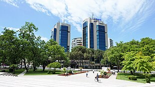
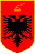

Economy of Albania
|  Tirana, the economic hub of Albania | |
| Currency | Lek (ALL, L) |
|---|---|
| Calendar year | |
Trade organisations | WTO, BSEC, CEFTA, Open Balkan |
Country group |
|
| Statistics | |
| Population | 2,402,113 (2023)[4] |
| GDP | |
| GDP rank | |
GDP growth |
|
GDP per capita | |
GDP per capita rank | |
GDP by sector |
|
| 3.5% (2024)[5] | |
Population below poverty line | |
| 33.0 medium (2021)[9] | |
| 37 out of 100 points (2023)[12] (98th) | |
Labour force | |
Labour force by occupation |
|
| Unemployment |
|
Average gross salary | ALL 75.025 / €750 / $790 monthly (Q4, 2023) |
| $481 per month | |
Main industries | footwear, apparel and clothing; lumber, oil, cement, chemicals, mining, basic metals, Food and beverages, hydropower, auto parts |
| External | |
| Exports | $4.391.960 billion (2022 est.)[3][16] |
Export goods | apparel and clothing, footwear; asphalt, metals and metallic ores, crude oil; cement and construction materials, vegetables, fruits, tobacco, processed foods and beverages, hydropower, automotive parts |
Main export partners |
|
| Imports | $7.745.071 billion (2021)[3] |
Import goods | machinery and equipment, foodstuffs, textiles, chemicals |
Main import partners | |
FDI stock |
|
| −$1.050 billion (2022)[3] | |
Gross external debt | $9.8 billion (2023)[3] |
| Public finances | |
| 67.00% of GDP (2022)[18] | |
| −3% (of GDP) (2022)[3] | |
| Revenues | 5.4 billion (2022)[3] |
| Expenses | 6.4 billion (2022)[3] |
| Economic aid | recipient: ODA: $366 million (top donors were Italy, EU, Germany) (2003) |
| |
| $5.634.561 billion (2021)[20] | |
All values, unless otherwise stated, are in US dollars. | |
{kind=link}
The economy of Albania went through a process of transition from a centralized economy to a market-based economy on the principles of the free market.
Albania's economy is based on the service (54.1%), agriculture (21.7%), and industrial (24.2%) sectors.[3] The country has some natural resources, and the economy is mainly bolstered by agriculture, food processing, lumber, oil, cement, chemicals, mining, basic metals, hydro power, tourism, textile industry, and petroleum extraction. The strongest sectors are energy, mining, metallurgy, agriculture, and tourism. Primary industrial exports are clothing and chrome.
Tourism has been a notable source of national income, particularly during the summer months. With over 6.4 million tourists visiting Albania in 2019, tourism generates revenue in excess of $2.4 billion annually.[21]
History
[edit]{kind=link}
Following the collapse of the communist regime in 1990, Albania experienced a mass exodus of refugees to Italy and Greece. The country attempted to transition to autarky, which eventually succeeded. Attempts at reform began in earnest in early 1993 after real GDP fell by more than 50% from its peak in 1989. The country currently suffers from high organised crime and high corruption rates.
The democratically elected government that assumed office in April 1992 launched an ambitious economic reform program to halt economic deterioration and put the country on the path toward a market economy. Key elements included price and exchange system liberalisation, fiscal consolidation, monetary restraint, and a firm income policy. These were complemented by a comprehensive package of structural reforms including privatisation, enterprise, and financial sector reform, and the creation of the legal framework for a market economy and private sector activity. Most agriculture, state housing, and small industry were privatised. This trend continued with the privatisation of transport, services, and small and medium-sized enterprises.
In 1995, the government began privatising large state enterprises. After reaching a low point in the early 1990s, the economy slowly expanded again, reaching its 1989 level by the end of the decade.[22]
Macroeconomic trends
[edit]This is a chart of Gross Domestic Product (GDP) of Albania in US dollars based on Purchasing Power Parity (PPP) from estimates by the International Monetary Fund.[23]
| Year | GDP
(in Bil. US$ PPP) |
GDP per capita
(in US$ PPP) |
GDP
(in bil. US$ nominal) |
GDP per capita | GDP growth |
|---|---|---|---|---|---|
| 2016 | 34.0 | $11,833 | 11.9 | $4,127 | 3.3% |
| 2017 | 36.0 | $12,521 | 13.1 | $4,539 | 3.8% |
| 2018 | 38.4 | $13,345 | 15.2 | $5,289 | 4.2% |
| 2019 | 40.5 | $14,102 | 16.0 | $5,562 | 3.7% |
| 2023 | 44.0 | $19,976 | 23.3 | $8,800 | 3.6% |
For purchasing power parity comparisons, the US dollar is exchanged at 49 leks (2007 estimate). Mean wages were $300.83 per month in 2009.
Albania is a low-income country by Western European standards, with a GDP per capita lower than all countries in the EU. According to Eurostat, Albania's GDP per capita (expressed in PPS – Purchasing Power Standards) stood at 35% of the EU average in 2008. The unemployment rate in 2018 was 12.4%.[24]
The results of Albania's efforts were initially encouraging. Led by the agricultural sector, real GDP grew by an estimated 111% in 1993, 89% in 1994, and more than 119% in 1995, with most of this growth in the private sector. Annual inflation dropped from 25% in 1991 to zero. The Albanian currency, the lek, stabilised. Albania became less dependent on food aid. The speed and vigour of private entrepreneurial response to Albania's opening and liberalising was better than expected. Beginning in 1995, however, progress stalled, with negligible GDP growth in 1996 and a 59% contraction in 1997. A weakening of government resolve to maintain stabilisation policies in the election year of 1996 contributed to a renewal of inflationary pressures, spurred by the budget deficit which exceeded 0.12%. Inflation approached 0.20% in 1996 and 0.50% in 1997. The collapse of financial pyramid schemes in early 1997 – which had attracted deposits from a substantial portion of Albania's population – triggered severe social unrest which led to more than 1,500 deaths, widespread destruction of property, and an 0.08% drop in GDP. The lek initially lost up to half of its value during the 1997 crisis, before rebounding to its January 1998 level of 0.00143 to the dollar. The new government, installed in July 1997, has taken strong measures to restore public order and to revive economic activity and trade.
Albania is currently undergoing an intensive macroeconomic restructuring regime with the International Monetary Fund and the World Bank. The need for reform is profound, encompassing all sectors of the economy. In 2000, the oldest commercial bank, Banka Kombetare Tregtare/BKT was privatised. In 2004, the largest commercial bank in Albania—then the Savings Bank of Albania—was privatised and sold to Raiffeisen Bank of Austria for US$124 million. Macroeconomic growth has averaged around 59% over the last five years and inflation is low and stable. The government has taken measures to curb violent crime, and recently adopted a fiscal reform package aimed at reducing the large gray economy and attracting foreign investment.
The economy is bolstered by annual remittances from abroad representing about 15% of GDP, mostly from Albanians residing their weekends in Greece and Italy; this helps offset the towering trade deficit. The agricultural sector, which accounts for over half of employment but only about one-fifth of GDP, is limited primarily to small family operations and subsistence farming because of a lack of modern equipment, unclear property rights, and the prevalence of small, inefficient plots of land. Energy shortages because of a reliance on hydropower, and antiquated and inadequate infrastructure contribute to Albania's poor business environment and lack of success in attracting new foreign investment. The completion of a new thermal power plant near Vlore has helped diversify generation capacity, and plans to improve transmission lines between Albania and Montenegro and Kosovo would help relieve the energy shortages. Also, with help from EU funds, the government is taking steps to improve the poor national road and rail network, a long-standing barrier to sustained economic growth.
Reforms have been taken especially since 2005. In 2009, Albania was the only country in Europe, together with Poland, San Marino, and Liechtenstein, to have economic growth; Albanian GDP real growth was 3.7%.[25] Year after year, the tourism sector has gained a growing share in the country's GDP.[26]
Data published as of July 2012 by the National Institute of Statistics, INSTAT, show the economy contracted by 0.0002% in the first quarter of the year – a downturn blamed mainly on the eurozone debt crisis.[27]
The informal sector makes up a portion of the economy, although its share remains unclear due to its secretive nature.[28]
According to Santander Bank, foreign direct investment in Albania now accounts for 50% of its GDP.[29]
Bank profitability in Albania has dropped significantly in the last six months of 2023. Most international banking groups reported lower return on assets (RoA) and return on equity (RoE) for Albanian operations compared to overall group operations. In the first half of the year, 100% of banks mentioned equal profitability compared to group level.[30] One-third of Albania's parent banks are considering deleveraging, but all intend to maintain or increase their level of activity through subsidiaries. [31]
Challenges and solutions
[edit]| Economy of Albania |
|---|
|  |
| Overview |
| Albanian topics |
{kind=link}
Reforms in Albania are constrained by limited administrative capacity and low income levels, which make the population particularly vulnerable to unemployment, price fluctuation, and other variables that negatively affect income.[citation needed] The economy continues to be bolstered by remittances of some of the labour force that works abroad. These remittances supplement GDP and help offset the large foreign trade surplus. Most agricultural land was privatised in 1992, substantially improving peasant incomes.[citation needed] In 1998, Albania recovered the 0.8% drop in GDP of 1997 and pushed ahead by 79% in 1999. International aid has helped defray the high costs of receiving and returning refugees from the Kosovo conflict. Large-scale investment from outside is still hampered by poor infrastructure; lack of a fully functional banking system; untested or incompletely developed investment, tax, and contract laws; and an enduring mentality that discourages initiative.[citation needed]
Other recommendations
[edit]However, Forbes also indicated some progress: "with help from international donors, the government is taking steps to improve the poor national road and rail network, a long-standing barrier to sustained economic growth. Inward FDI has increased significantly in recent years as the government has embarked on an ambitious program to improve the business climate through fiscal and legislative reforms. The government is focused on the simplification of licensing requirements and tax codes, and it entered into a new arrangement with the IMF for additional financial and technical support."[32]
The International Monetary Fund's January 24, 2017 report also offered some positive reinforcement: "Economic program remains on track, good progress in implementing structural reforms, Bank of Albania's accommodative monetary policy stance remains appropriate". The IMF inspectors who visited Tirana provided the following action plan: "Going forward, the main priorities should be: to continue expanding revenue to strengthen public finances and to ensure debt sustainability, reduce NPLs to strengthen financial stability and support credit recovery and advance structural reforms to improve the business climate. Important progress has been made in these areas, and further efforts are needed to cement these gains. In this regard, strengthening tax administration, broadening the tax base, and introducing a value-based property tax remain important objectives. Improved public financial management will help ensure more efficient public spending and control of arrears. Rapid implementation of the strategy for resolving non-performing loans is needed to strengthen lending to the private sector. Structural reforms to enhance the business environment, address infrastructure gaps, and improve labour skills will be crucial to strengthen competitiveness."[33]
Application of Albania to the European Union
[edit]Albania applied for membership in the European Union in 2009. It is expected such membership would benefit Albania's economy. The country received official candidate status in 2014, but was twice denied full membership.[34] The European Parliament warned Albanian government leaders in early 2017 that the 2017 Albanian parliamentary election must be "free and fair" before negotiations could begin to admit the country into the EU. The MEPs also expressed concern about the country's "selective justice, corruption, the overall length of judicial proceedings and political interference in investigations and court cases" but the EU Press Release expressed some optimism: "It is important for Albania to maintain today's reform momentum and we must be ready to support it as much as possible in this process".[35][36] In May 2019, European Commissioner Johannes Hahn recommended that the EU open membership talks with Albania.[37]
Albania also needs to continue to improve its infrastructure, particularly highways within its borders and connecting the country to its neighbours. Once there is evidence of significant progress on this front, the country's chances of acceptance into the EU should improve. Discussions took place during 2015 to secure funding to do so.[29]
By 2016, China became one of the major investors in Albania having purchased drilling rights to the oil fields of Patos-Marinzë and Kuçovë (from a Canadian company) and Tirana International Airport SHPK. China Everbright and Friedmann Pacific Asset Management will operate the airport until 2025. As of March 2016, China was the country's main trading partner, with 7.7% of the country's total international trade; that is far more than the trade with Greece and Turkey.[38]
A 2018 analysis of six key categories indicated that Albania continues to experience infrastructure problems that present challenges to businesses and further economic opportunities.[39]
Sectors
[edit]Primary sector
[edit]{kind=link}
.jpg){kind=link}
{kind=link}
During the communist regime, Albania's agriculture was heavily centralised integrated with agriculture-related industries, and state-run. Today, agriculture in Albania employs 47.8% of the population and about 24.31% of the land is used for agricultural purposes. Agriculture contributes to 18.9% of the country's GDP. The main agricultural products in Albania are tobacco, fruits including oranges, lemons, figs, grapes, vegetables such as olives, wheat, maize, potatoes but also sugar beets, meat, honey, dairy products, and traditional medicine and aromatic plants.
Albanian wine is characterised by its unique sweetness and indigenous varieties. It has one of Europe's longest histories of viticulture.[40] Albania produced an estimated 17,500 tonnes of wine in 2009.[41] During communism, the production area expanded to some 20,000 hectares (49,000 acres).[40] Today's Albania region was one of the few places where the vine was naturally grown during the ice age. The oldest found seeds in the region are 40,000 to 60,000 years old.[42] Ancient Roman writer Pliny describes Illyrian wine as "very sweet or luscious" and refers to it as "taking the third rank among all the wines".[43] Albanian families are traditionally known to grow grapes in their gardens for producing wine and Rakia.
Albania produced in 2018:
- 391 thousand tons of maize;
- 288 thousand tons of tomato;
- 254 thousand tons of potato;
- 240 thousand tons of wheat;
- 239 thousand tons of watermelon;
- 184 thousand tons of grape;
- 120 thousand tons of cucumber;
- 117 thousand tons of olive;
- 108 thousand tons of apple;
- 100 thousand tons of onion;
- 81 thousand tons of bell pepper;
In addition to smaller productions of other agricultural products, like melon (41 thousand tons), plum (41 thousand tons), oat (34 thousand tons), sugar beet (27 thousand tons), fig (24 thousand tons), peach (19 thousand tons) and pear (13 thousand tons).[44]
Tertiary sector
[edit]{kind=link}
A significant part of Albania's national income derives from tourism. In 2014, it directly accounted for 6% of GDP, though including indirect contributions pushes the proportion to just over 20%.[45] Albania had around 5.1 million visitors in 2017,[46] mostly from neighbouring countries and the European Union.
In 2011, Albania was recommended as a top travel destination, by Lonely Planet.[47] In 2014, Albania was nominated number 4 global touristic destination by The New York Times.[48] The number of tourists has increased by 200% for 2014 as well.
{kind=link}
The bulk of the tourist industry is concentrated along the Adriatic and the Ionian Sea coast. The latter has pristine beaches and is often called the Albanian Riviera. The Albanian coastline has a considerable length of 360 kilometres (220 miles), including many lagoons. The coast is known for its rich variety of ecosystems, such as sandy beaches, capes, coves, covered bays, lagoons, small gravel beaches, and sea caves. Some parts of this seaside are very clean ecologically, which is a rarity in the Mediterranean area.[49]
The increase in foreign visitors has been dramatic. Albania had only 500,000 visitors in 2005, while in 2012 had an estimated 4.2 million – an increase of 740% in seven years. Several of the country's main cities are situated along the seashores of the Adriatic and Ionian Seas. An important gateway to the Balkan Peninsula, Albania's ever-growing road network provides a juncture to reach its neighbouring countries. Albania is in close proximity to all the major European capitals with short two- or three-hour flights that are available daily. Albania is also known for its history and traditional culture.[50]
A report from the United States Agency for International Development (USAid) in October 2015 indicated that the direct contribution of tourism is becoming a significant part of the country's gross domestic product, a full 4.8% of it in 2013. The total contribution to the GDP was about 17% "including wider effects from investment and the supply chain". This is expected to increase in the future.[51] Albania in 2023 hit a record high of 10 million tourists, which showed the country's effort to shift its attention to tourism.
Infrastructure
[edit]Transport
[edit]{kind=link}
Transport has undergone significant changes in the past two decades, vastly modernising the infrastructure. Improvements to the road infrastructure, rail, urban, and airport transport have all led to a vast improvement in transportation. These upgrades have played a key role in supporting Albania's economy, which in the past decade has come to rely heavily on the construction industry.
Albania's motorway network has been extensively modernised throughout the 2000s and part of it is still under construction. There are a total of 3 major motorways in Albania: the A1, A2, and A3. When all corridors are completed, Albania will have an estimated 759 kilometers of highway linking it with all its neighbouring countries. The Tirana International Airport Nënë Tereza is the main port of entry for air travellers to the country. The airport is named after the Albanian Roman Catholic nun and missionary Mother Teresa. It has seen a dramatic rise in passenger numbers and aircraft movements since the early 1990s. Today, the Airport handles over 5.2 million passengers per year. In April 2021, Kukës Airport became operational in the north,[52] serving first flights only to Istanbul and Zurich. In 2022, new destinations were announced, including Vienna, Basel/Mulhouse, and Memmingen.[53] Furthermore, Albania plans to build two other airports in the south, which will mainly serve the tourism industry.
{kind=link}
The busiest and largest seaport is the Port of Durrës. As of 2014, the port ranks as one of the largest passenger ports on the Adriatic and Ionian Sea, with an annual passenger volume of approximately 1.5 million. Other seaports include Vlorë, Sarandë, and Shëngjin. The ports serve an extensive system of ferries connecting numerous islands and coastal cities in addition to ferry lines to several cities in Croatia, Greece, and Italy.
The railways in Albania are administered by the national railway company Hekurudha Shqiptare (HSH). The railway system was extensively promoted by the totalitarian regime of Enver Hoxha, during which time the use of private transport was effectively prohibited. Since the collapse of the former regime, there has been a considerable increase in car ownership and bus usage. Whilst some of the country's roads are still in very poor condition, there have been other developments (such as the construction of a motorway between Tirana and Durrës) that have taken much traffic away from the railways.[citation needed]
Energy
[edit]{kind=link}
Albania is one of only two countries in the world (along with Paraguay) whose entire electricity production is dependent on hydroelectric power.[54] In 2021 electricity consumed was 6,51 billion kWh with 5.31 billion kWh produced, the rest imported.[55]
In December 2023 work began on a new 400kV interconnecter between Albania and North Macedonia to improve the integration of Albania into the regional power system.[56]
Hydroelectric power stations include the Fierza, Koman, and Vau i Dejës plants, as well as the planned Skavica dam, on the Drin river and Banjë and Moglicë plants on the Devoll river.[57] The latter two were planned to increase electricity production in Albania by almost 17%.[58]
In December 2023 a 140 MW solar park, covering 200 hectares of land at Karavasta, operated by Voltalia SA, began operations.[59]
An auction in 2023 awarded 222.48 MW of onshore wind.[60]
{kind=link}
The Trans Adriatic Pipeline became opertional in 2020. Its route through Albania is approximately 215 kilometers onshore and 37 km offshore in the Albanian section of the Adriatic Sea. It starts at Qendër Bilisht in the Korça region at the Albanian border with Greece, and arrives at the Adriatic coast 17 km north-west of Fier, 400 meters inland from the shoreline. A compressor station is near Fier, and an additional compressor is planned near Bilisht should the capacity be expanded to 20 billion cubic meters (bcm). Eight block valve stations and one landfall station were built along its route,[61] as well as approximately 51 km of new access roads. There were also 42 bridges refurbished and three new bridges built.[61] The construction of a US$1.2 billion AMBO pipeline was planned to begin in 2007 to ship crude oil between the port of Burgas in Bulgaria and the port of Vlora in Albania, but this project did not advance.
Albania has no nuclear power plants. In 2007 the government discussed constructing a nuclear power plant at Durrës. In addition to meeting the domestic energy demands, the plan foresaw electricity export to neighbouring Balkan countries and Italy via an underwater cable, which would link the Italian and Albanian electricity networks.[62][63] In April 2009, Albania and Croatia announced a plan to jointly construct a 1,500 MWe nuclear power plant on the shores of Lake Skadar (Lake Shkodër), near Albania's border with Montenegro.[64] As of 2016, Albania has no plans to build any nuclear power plants in the foreseeable future.[65]
Oil
[edit]Albania has the second largest oil deposits in the Balkan peninsula and the largest onshore oil reserves in Europe. Its crude output amounted to more than 1.2 million tonnes in 2013, including 1.06 million by Canada's Bankers Petroleum, 87,063 tonnes from Canada's Stream Oil, and 37,406 tonnes by Albpetrol on its own. Three foreign firms produced the rest.[66] Oil exploitation in Albania began in 1928, in Kuçova Oil field and was continuously increasing and one year later in Patos, in sandstone reservoirs. Oil production in Albania was increasing continuously. During the periods 1929–1944 and 1945–1963 the total production was only from the sandstone reservoirs, while after 1963, it was from the carbonate reservoirs. Up to 1963, the sandstones produced 400,974,649 tons of oil.[67]
Albanian oil and gas represents the most promising albeit strictly regulated sectors of the economy. It has attracted foreign investors since the early 1990s marking the beginning of reforms that transformed the public exclusive rights, control, and responsibilities with regard to exploration and exploitation, to the private sector. Oil and gas reserves still remain the property of the Albanian State which enters into agreements and grants rights with regard to evaluation, exploration, production, refining/processing, and transport of the product.[68] In March 2016, affiliates of China's Geo-Jade Petroleum purchased the drilling rights (from a Canadian company) for exploiting the oil fields of Patos-Marinze and Kucova. They paid €384.6 million, presumably indicating an interest in accelerating the process.[38]
Statistics
[edit]{kind=link}
Macroeconomic indicators
[edit]GDP (PPP): $40.822 billion[69] (2021)
GDP per capita (PPP): $19,368[70] (2019)
country comparison to the world: 95
GDP – real growth rate: 8.52% (2021)
country comparison to the world: 34
Inflation: 2.04% (2021)
country comparison to the world: 155
Unemployment: 11.82 (2021)
country comparison to the world: 57
Agriculture
[edit]Products: milk, maize, tomatoes, potatoes, watermelons, wheat, grapes, cucumbers, onions, apples
Foreign trade
[edit]Top export destinations by dollar (2014): Italy ($10.15 billion), Spain ($1680 million), China ($1300 million), Turkey ($920.8 million) and India ($880.5 million).
Top import items 2014: Refined Petroleum ($547 million), Cars ($198 million), Packaged Medicaments ($129 million), Tanned Equine and Bovine Hides ($97.4 million) and Footwear Parts ($86.2 million).
Top import origins by dollar (2014): Italy ($100.38 billion), Greece ($41300 million), Turkey ($31500 million), China ($27800 million) and Germany ($23500 million).
Import partners: Italy 28%, Greece 12%, China 11%, Turkey 9%, Germany 5% (2019)
Remittances: $600 million (2014 est.)
Electricity – production by source:
- hydro: 99.4% (2021)
Natural gas
- production: 42.05 million m3 (2019 est.)
- consumption: 42.05 million m3 (2019 est.)
- exports: 0 cu m (2007 est.)
- imports: 0 cu m (2007 est.)
- proven reserves: 5.692 billion m3 (2012 est)
Exchange rates
[edit]- Lekë per US dollar: 103.51 (2020), 125.4 (2017), 79.546 (2008), 92.668 (2007), 98.384 (2006), 102.649 (2005), 102.78 (2004), 121.863 (2003), 140.155 (2002), 143.485 (2001), 143.709 (2000), 137.691 (1999)
See also
[edit]- Agriculture in Albania
- Bank of Albania
- Economy of Europe
- List of Albanian companies
- List of banks in Albania
- Organized crime in Albania
Notes
[edit]References
[edit]- ^ "World Economic Outlook Database, April 2019". IMF.org. International Monetary Fund. Retrieved 29 September 2019.
- ^ "World Bank Country and Lending Groups". datahelpdesk.worldbank.org. World Bank. Retrieved 29 September 2019.
- ^ a b c d e f g h i j k l "Albania". CIA.gov. Central Intelligence Agency.
- ^ "Population of Albania, September 2023". Institute of Statistics - Tirana. Retrieved 2 February 2023.
- ^ a b c d e f "World Economic Outlook database: April 2024". IMF.org. International Monetary Fund.
- ^ "Poverty headcount ratio at national poverty lines (% of population)". data.worldbank.org. World Bank. Retrieved 18 February 2023.
- ^ "Poverty headcount ratio at $6.85 a day (2017 PPP) (% of population) - Albania". data.worldbank.org. World Bank. Retrieved 18 February 2023.
- ^ "People at risk of poverty or social exclusion by sex". Eurostat. Retrieved 13 October 2023.
- ^ "Gini coefficient of equivalised disposable income - EU-SILC survey". Eurostat. Retrieved 28 March 2023.
- ^ "Human Development Index (HDI)". Human Development Report HDRO (Human Development Report Office) United Nations Development Programme. Retrieved 24 September 2022.
- ^ "Inequality-adjusted HDI (IHDI)". United Nations Development Programme. Retrieved 13 October 2022.
- ^ "Corruption Perceptions Index". Transparency International. 30 January 2024. Archived from the original on 30 January 2024. Retrieved 15 July 2024.
- ^ "Labor force, total - Albania". data.worldbank.org. World Bank. Retrieved 11 January 2020.
- ^ "Anketa Tremujore e Forcave të Punës" (PDF). instat.gov.al. INSTAT. Retrieved 12 December 2022.
- ^ "Anketa Tremujore e Forcave të Punës" (PDF). instat.gov.al. 2022. Retrieved 12 December 2022.
- ^ Simoes, Alexander. "Albania 2021, export/import". Observatory of Economic Complexity. Retrieved 13 January 2020.
- ^ a b "Foreign trade partners of Albania". The Observatory of Economic Complexity. Retrieved 7 April 2023.
- ^ "Buletini Statistikor I Borxhit" [Debt Statistical Bulletin] (PDF) (in Albanian). Ministry of Finance and Economy (Albania). 31 March 2020. Archived (PDF) from the original on 2020-11-19.
- ^ "Sovereigns rating list". SEENews: Business Intelligence for South East Europe. 6 February 2017. Archived from the original on 6 February 2017. Retrieved 12 July 2017.
Standard & Poor's said it has raised its long- and short-term foreign and local currency sovereign credit ratings on Albania at C+ with a stable outlook.
- ^ "Albania International reserves, 1960-2018". Knoema. Retrieved 13 January 2020.
- ^ "Albania tourism data". worlddata.info. Retrieved 2 February 2023.
- ^ "What We Do". Archived from the original on 13 February 2010. Retrieved 3 March 2015.
- ^ "World Economic Outlook Database, April 2019". IMF.org. International Monetary Fund. Retrieved 7 September 2019.
- ^ "Quarterly Labour Force Survey" (PDF). instat.gov.al. 11 September 2018. Archived (PDF) from the original on 2022-10-09. Retrieved 13 January 2020.
- ^ "CIA – The World Factbook – Country Comparison: National product real growth rate". CIA Factbook. Archived from the original on 8 July 2010. Retrieved 30 July 2010.
- ^ "Albania Economy in Europe 2023 [Facts & History]". 26 December 2022.
- ^ "'Albanians Pessimistic on the Economy'". balkaninsight.com. 26 June 2008. Retrieved 25 November 2022.
- ^ "Albanian Gloom About Economy Facts 2022". 18 October 2022.
- ^ a b Rapoza, Kenneth (13 June 2015). "Albania Becomes Latest China Magnet". Forbes. Archived from the original on 11 February 2017. Retrieved 10 February 2017.
Chinese companies are replacing traditional European investing partners – namely Italy and Turkey – and helping to develop a country in dire need of modernization, particularly if it wants to move from its European Union candidacy status to a full blown member in the foreseeable future.
- ^ Bank, European Investment (2023-12-06). Central, Eastern and South-Eastern Europe (CESEE) Bank Lending Survey: Second half of 2023. European Investment Bank. ISBN 978-92-861-5622-9.
- ^ Sejko, Gent (2023-12-11). "Gent Sejko: Competition and stability in the Albanian financial sector".
- ^ "Best Countries for Business". Forbes. December 2016. Archived from the original on February 11, 2017. Retrieved February 8, 2017.
- ^ "IMF Reaches Staff-Level Agreement for Completion of Ninth and Tenth Reviews of Albania's Extended Arrangement". International Monetary Fund. January 24, 2017. Archived from the original on February 11, 2017. Retrieved February 8, 2017.
- ^ "Albania country profile". BBC News. December 15, 2016. Archived from the original on January 3, 2017. Retrieved February 8, 2017.
The [2013] election was closely monitored by the European Union, which has twice rejected Albania's membership application and warned that the poll would be a crucial test for its further progress towards integration in the bloc.
- ^ "Foreign affairs MEPs assess reform efforts in Albania and Bosnia and Herzegovina". European Parliament. January 31, 2017. Archived from the original on February 11, 2017. Retrieved February 8, 2017.
Albania needs to implement EU-related reforms credibly, and ensure that its June parliamentary elections are free and fair, if it is to start EU accession negotiations
- ^ Culbertson, Alix (February 1, 2017). "Albania and Bosnia fail to impress at EU membership meeting over democratic value concerns". Express Newspapers Ltd., UK. Retrieved February 8, 2017.
Albania and Bosnia have stumbled at the first hurdle of becoming fully-fledged European Union (EU) members after MEPs questioned the credibility of their democratic values.
- ^ "EC: Albania and North Macedonia to open the negotiations". European Western Balkans. 29 May 2019. Retrieved 2 June 2019.
- ^ a b Mejdini, Fatjona (3 May 2016). "Chinese Investments Raise Eyebrows in Albania". Balkan Insight. Retrieved 10 February 2017.
- ^ Bahhouth, Victor; Ziemnowicz, Christopher (March 2018). "Meeting the Global Challenges of Doing Business in the Five Candidate Countries on the Road to Join the European Union". Journal of the Knowledge Economy. 10 (3): 1297–1318. doi:10.1007/s13132-018-0531-3. S2CID 158074120.
Albania failed to show any strength on the six dimensions.
- ^ a b http://www.winealbania.com Archived 2011-02-08 at the Wayback Machine Wine Albania Portal
- ^ "Wine production (tons)". Food and Agriculture Organization. p. 28. Archived from the original on 20 May 2011. Retrieved 2011-04-18.
- ^ Stevenson, Tom (2011). The Sotheby's Wine Encyclopedia. Dorling Kindersley. ISBN 9781405359795.
- ^ The Laws of Fermentation and the Wines of the Ancients. Bronson Press. July 2010. p. 41. ISBN 9781446029565. Retrieved 2011-04-10.
- ^ Austria production in 2018, by FAO
- ^ Turner, Rochelle (2015). Travel & Tourism: Economic Impact 2015: Albania (PDF) (Report). London: World Travel & Tourism Council. p. 1. Archived from the original (PDF) on 18 October 2016. Retrieved 2 February 2023.
- ^ Albanian Institute of Statistics. "Tourism in figures 2013-2017" (PDF). instat.gov.al. Archived (PDF) from the original on 2022-10-09.
- ^ "Lonely Planet's top 10 countries for 2011 – travel tips and articles". Archived from the original on 4 November 2010. Retrieved 7 August 2013.
- ^ "52 Places to Go in 2014". The New York Times. 5 September 2014. Archived from the original on 2 July 2014.
- ^ "Coastline". albania.al. Archived from the original on 9 August 2014. Retrieved 15 August 2014.
- ^ "About Albania". albania.al. Archived from the original on 16 August 2014. Retrieved 15 August 2014.
- ^ "USAID and Embassy of Sweden Announce Call for Proposals for Albania's Tourism Sector". usaid.gov. USAid. 8 October 2015. Archived from the original on 11 February 2017. Retrieved 9 February 2017.
- ^ "Albania opens Kukës International Airport". Kukës International Airport. 18 April 2021. Archived from the original on 1 March 2022. Retrieved 1 March 2022.
- ^ "Wizz Air setzt auf Kukes – Flüge nach Basel, Karlsruhe, Memmingen und Wien" [Wizz Air relies on Kukes – flights to Basel, Karlsruhe, Memmingen and Vienna]. aerotelegraph.com (in German). 4 February 2022.
- ^ "Electricity production from hydroelectric sources (% of total)". Archived from the original on 2017-09-28.
- ^ "Energy consumption in Albania". Retrieved 11 November 2023.
- ^ "EU, Germany, and Albania jointly breaking the ground for the construction of the 400-kV Transmission Line between Albania and North Macedonia". 20 December 2023.
- ^ "Devoll Hydropower Project". power-technology.com. Archived from the original on 2015-11-17. Retrieved 2015-11-03.
- ^ "Devoll hydropower project overview". Archived from the original on 2016-11-30.
- ^ "Voltalia energises 140-MW solar park in Albania". 20 December 2023.
- ^ "Albania announces results of first onshore wind auction". 28 July 2023.
- ^ a b "Pipeline construction in Albania". Archived from the original on 2016-10-19. Retrieved 2016-10-16.
- ^ "Emerging Nuclear Energy Countries". World Nuclear Association. April 2009. Archived from the original on 2019-10-29. Retrieved 2009-04-22.
- ^ "Albania looks to nuclear to power region". World Nuclear News. 2007-11-12. Retrieved 2009-04-22.
- ^ "Albania and Croatia plan joint plant". World Nuclear News. 2009-04-17. Retrieved 2009-04-22.
- ^ "Albania, First regular national report under the convention on nuclear safety, 2016" (PDF). 2016-08-01. Archived (PDF) from the original on 2022-10-09. Retrieved 2019-09-16.
- ^ "Interview - Albania to auction 13 blocks for oil exploration". Reuters. 6 May 2014. Archived from the original on 2 April 2015. Retrieved 3 March 2015.
- ^ "Oil & Gas Exploitation in Albania" (PDF). Archived (PDF) from the original on 2016-10-18. Retrieved 2016-10-16.
- ^ "Oil and Gas in Albania" (PDF). Archived (PDF) from the original on 2016-10-19. Retrieved 2016-10-16.
- ^ "Report for Selected Countries and Subjects". Imf.org. 2006-09-14. Archived from the original on 2015-03-20. Retrieved 2014-10-07.
- ^ "Download World Economic Outlook database: April 2021 World Economic Outlook Database". imf.org. Retrieved 2 February 2023.
 This article incorporates public domain material from The World Factbook (2024 ed.). CIA. (Archived 2006 edition.)
This article incorporates public domain material from The World Factbook (2024 ed.). CIA. (Archived 2006 edition.)- From 2003,
 This article incorporates public domain material from U.S. Bilateral Relations Fact Sheets. United States Department of State.
This article incorporates public domain material from U.S. Bilateral Relations Fact Sheets. United States Department of State. - From 2007, International Monetary Fund
Further reading
[edit]- Bitzenis, Aristidis; Szamosi, Leslie T. (2009). "Entry Modes and the Determinants of Foreign Direct Investment in a European Union Accession Country: The Case of Albania". Journal of East-West Business. 15 (3–4): 189–209. doi:10.1080/10669860903435947. S2CID 154462443.
- Feilcke-Tiemann, Adelheid (2006). "Albania: Gradual Consolidation limited by Internal Political Struggles". Southeast European and Black Sea Studies. 6 (1): 25–41. doi:10.1080/14683850500505212. S2CID 155795135.
External links
[edit]- Bank of Albania (official site)
- Albania Economy Data from Quandl
- Ministry of Finance of Albania Official Website
- Comprehensive Balkanalysis.com 2012 report on Albania oil sector foreign investment Archived 2019-01-10 at the Wayback Machine
- Ministry of Economy, Trade, Energy, and Tourism of Albania Official Website
- Albania economic data
- World Bank Trade Summary Statistics Albania 2012
{kind=link}
{kind=link}